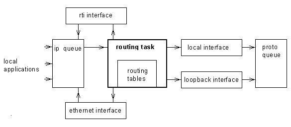
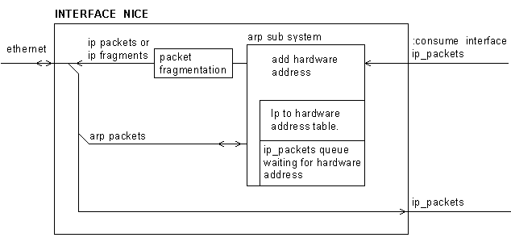
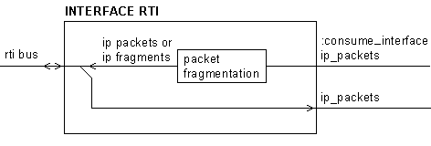
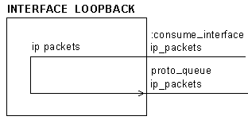
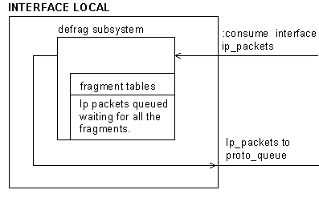
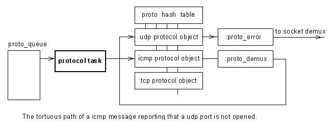

Colour Vision Systems builds fruit handling equipment. In that market we build vision systems and supply reasonably complex distributed computing systems. The real time computers have always been based on the 68k and FORTH. The systems have been tied together using proprietary communication protocols.
Two years ago Motorola brought the 68k family to an end. They announced the 68060 would be the last.
We had an OS that was tied to the 68k with over 50% of the code written in 68k assembler. For the first time in 14 years we had to look over the fence and evaluate processor families offered by others, and worry about the OS.
We looked hard at the option of abandoning our OS and moving to a commercial solution. Unfortunately our applications require preemptive multitasking so the solutions offered by the major FORTH vendors were not suitable.
We evaluated several C based solutions but concluded the development model offered by FORTH had served us well. No one was looking forward to developing their embedded code with emulators and remote debuggers.
With our current system a service engineer can go to site and modify the code of the most insignificant embedded processors without any additional equipment. All subsystems are networked and all provide access to the development task, with file services being provided by a central server.
We reluctantly decided to rewrite our OS in FORTH, making it as portable as possible.. We also decided to place the result under the GPLL in the hope that others may find a use for the result. Colour Vision Systems are not in the OS business.
The decision to write the entire OS in FORTH and the decision to GPLL the code influenced the COLDFORTH design goals.
The code has all been written as HTML files. Making it a simple matter to present it on the web. A CVS server will be put on line in the new year.
An operating system should provide a framework that ties device drivers together and a structure to manage resources.
The two other papers presented this year discussed COLDFORTHs heap allocation and task scheduling, both resource management issues. How COLDFORTH device drivers are implemented heavily influences the COLDFORTH TCP/IP stack and is discussed here.
Basically COLDFIRE device drivers are objects and the whole system has been designed around classes. Considerable time was spent evaluating the various OOP models that have been developed for FORTH. We selected Anton Ertl’s model, modifying it so that cross compile-able code could be written. We also altered word names so they met our coding standards.
Having used Anton’s model extensively we want to make several small changes to it. I am hoping these changes are influenced by a consensus as to what the ANSI standard OOP language should look like. ANSI standard word do not conflict with our coding standard because of rule one. No matter how irrational the ANSI standard word names is; use it. ANSI standard words are in capital letter, non standard names are in lower case. COLDFORTH is case sensitive.
There is however one area where we are now very inflexible. Polymorphism and late binding. It has to be fast. Searching for a name match is not an option.
Handling of devices can be broken down to one simple requirement. A single function has to perform the same operation against completely different hardware. The ANSI standard gives the names of suitable function for I/O operation, but no guidance on how the functions are to be implemented. In fact without a bit of lateral thinking you may not see that READ-FILE is a perfectly good word to read data from any I/O device, be it serial or block orientated; local or remote; based on silicon or rotating disk based.
The COLDFORTH definition of READ-FILE is:
: READ-FILE ( c-addr u1 fileid -- u2 ior ) ['] :read CATCH DUP IF >R 2DROP zero R> THEN ;
The definition is simple and it is almost all ANSI forth. The COLDFORTH fileid is the base address of an object. READ-FILE calls the :read method within the object. We have to use CATCH as the COLDFORTH device standard allows the device methods to abort on failure. The READ-FILE description requires an ior code on error. CATCH is an elegant solution. The abort is converted converted to a stack error. CATCH is a terrific idea.
Defining methods that have different actions in derived classes is called POLYMORPHISM. For some reason OOP programming has developed a jargon that seems to aim to confuse.
Obviously for the READ-FILE code to be efficient, runtime lookup of the :read method has to be fast. This is the case for the OOP program model presented by Anton.
All the FORTH I/O words can be built up from methods implemented in the standard COLDFORTH driver. The file words take the object address from the stack. Words such as EXPECT and TYPE take their object address from a user variable. For example the definition of TYPE is:
: TYPE ( addr num--) 'output_file @ :type ;
‘output_file is the user variable where the address of the object opened for output is stored. TYPE like the device methods is allowed to ABORT on failure. This leads to a definition that is even cleaner than the definition for READ-FILE. :type is defined for serial devices and block devices, there is only one real difference between TYPE and WRITE-FILE. TYPE takes its object address from a user variable; WRITE-FILE takes it from the stack.
All COLDFORTH I/O operations follow the open action close paradigm. Open provides the object address, the operations require the object address and close destroys the object. In all cases the object is created on the heap, and close returns the object to free heap memory.
As is common with a lot of COLDFORTH I/O words, Open comes in three flavors:
open ( "string" --object) $open ( addr --object) Sopen ( addr n --object)
The open string has the form:
device/device_string
The open function splits the string at the first / and uses the left hand portion to search the device word list. If a word is found in the word list, it is treated as a class and used to construct an object. The construction process is given the address and count of the right portion of the string.
For example: To open a file that is stored in flash memory you would use the code:
open flash/directory_name/file_name
To open a udp client talking to machine 192.168.255.1 port 07 you use the code:
open udp_client/192.168.255.1/07
Or if you want to bind to the port and leave the machine specification for later:
open udp_client//07
In all case data can be read from the device using READ-FILE.
The tcp/ip protocol field is eight bits long, in practice only a few values have meaning; you don’t however have to define all valid protocols at kernel compile time. We define the required methods with a base class and derive the different protocols from that class. Dispatching an ip datagram then becomes an exercise in searching created protocol object and presenting the incoming datagram to the right method in the object that handles the selected protocol.
Tcp/ip is about accepting datagram from different network interfaces, routing them and passing them onto other network interfaces. The routing routine doesn’t get involved in device details; it simply determines which interface should get the datagram; extracts the interface's object address and calls the :consume_interface method through the object, the routing routine doesn’t get involved in the messy details.
The UDP and TCP protocols requires the source address and destination address to create the protocol checksum, the source address is dependent on the interface over which the datagram is sent, the interface a datagram is sent is dependent on the routing tables. The routing tables are a dynamic data structure. If you use classes and methods the problem is simply solved, you add the protocol object to the data structure describing the datagram and have the interface object call the protocol checksum method just before fragmentation.
Classes and polymorphism have been used to break the tcp/ip stack up into well defined sections with clean interfaces. Once again I will mention the basic underlying requirement. Fast runtime binding of objects to methods.
If a packet is placed on the ip queue it will be removed by the routing task. The routing task doesn’t have to ask difficult questions or look for exceptions. Its life is simple. Dequeue the ip packet, extract the destination, look up the routing table entry for that destination. Call the :consume_interface method of the object pointed to by the routing table entry found.
The routing table entries contain a flag that is true if the entry is for a broadcast address; if it is true the :broadcast method is called instead of the :consume_interface method.
The :consume_inerface or :broadcast method will take the packet and deal with it as required.

Ip packets enter and exit the tcp/ip code through an interface. Interface_common is the base class. From interface_common we derive interface_local used if the packet is destined for the local machine. Interface_loopback, is used if the packet was sent to the loopback address. interface_nice is used to get packets from and send packets to the ethernet, and interface_rti is used to transfer packets across the rti backplane.
To send a packet from one machine to another on an ethernet link the ip address has to be converted to a hardware address. The tcp/ip standard describes another protocol referred to as arp ( address resolution protocol). The arp protocol is used to request the mapping. The workings of this protocol are contained within the interface_nice class as it has nothing to do with the rest of the system.

The ethernet interface is complex as the ip to hardware address translation involves another protocol. The rti_interface uses the low low 4 bits of the ip address to select a card. The rti bus being a sixteen bit bus that supports up to 16 I/O cards.

The loopback interface is simpler again, it provides the method needed by the routing task to get rid of a loopback packet ( :consume_interface) performs the miscellaneous functions an interface is expected to do, such as filling in the source address and checksumming the protocol. Loopback interface then queues the packet onto the proto_queue. A loopback packet will not be fragmented, so the loopback interface doesn't have to get involved in de-fragmenting.

ip packets destined for the local machine will be routed to the local interface. The local interface puts together fragmented datagrams and queues reconstructed datagrams onto the protocol queue. The protocol task takes packets from the protocol queue, looks up the protocol table extracts the address of the object that looks after the selected protocol and executes the :proto_demux method.
The difference between the ip_queue and the proto_queue can be summarized with one statement. The ip_queue sees all ip packets seen be the system. The proto_queue sees only those packets that are routed to the local machine.

The ip packet has arrived, it was destined for the local machine so it ended up on the proto_queue. The protocol task has looked at the protocol field in the ip header searched for a protocol demux table entry for the protocol and called the relevant :prot_demux method. But the beat goes on.
In the TCP/IP suit three protocols are significant, ICMP (internet control message protocol), UDP (User datgram protocol) and TCP (Reliable Stream Transport Service).
At this level ICMP is the most difficult to deal with. Many of the ICMP messages contain the header of the datagram that caused a problem. The ICMP code has to extract the ip header returned in it's data field, and return an error to the socket that initially sent the datagram. To do this the ICMP code extracts the protocol of the returned datagram, searches the protocol demux table for the protocol and calls the relevant :proto_error method.
OOP has once again supplied us with a very elegant solution.

Socket demux takes the source ip address, destination ip address, source port and destination port, works out which object would like to deal with the packet and hands it on. The icmp protocol doesn’t do a socket demux, both the udp and tcp protocol do. The protocol demux is done in the :proto_demux method or the :proto_error method. The objects consuming the packets are linked into a hash table. The routine searches the hash table for the desired entry and hands the packet to the :consume_port method. For the udp protocol the object that consumes packets demuxed to the socket is the io_common object created when the port is opened. The io_common object adds the packet to the data that can be read using the :read method we introduced at the start of this paper.
Tcp packets still have a way to go, the address of the object dealing with the socket is added to the ip data structure, and the packet queued on the tcp_queue, to be dealt with by the tcp task.
I have outlined how OOP techniques have been used to tame the tcp/ip stack. I touched on how they where used to create a very elegant structure for device drivers. I could just as easily have discussed how OOP techniques led to a very tidy file system
I have only looked at two OOP implementations in detail, Andrew McKewan's and Anton Ertl's. It was my view the FORTH community needed another OOP model like a hole in the head, I therefore tried to adapt what was there to meet our needs. We have developed cross compilers to the point where they could compile code written using either model. So for us this was not an issue. We adopted the Anton's model because of its simplicity.
An object places the address of a data structure on the stack, nothing more. So the rest of Anton's model doesn't care how the address of the data structure came to be.
'output_file @Is as valid as:
object_nameYou can create an object in the dictionary, an object on the heap or an object on the stack, and they all behave the same way. The address of an object is returned.
Anton's methods take an object from the stack, and locates the method using an offset into the method table. The runtime code is:
DOES> _selector_offset+ @ \ object selector_offset<-- OVER _object_map+ @ + \ object xtp<-- @execute ;
Blindly using an offset can lead to problems if two different classes have the same method name, but are using different table offsets. It is a hard bug to find. The COLDFORTH kernel makes extensive use of word name checksums ( to be specific the ethernet CRC32 bit checksum), with the compiler insisting that all tokens used generate a unique CRC32 code. Our version of Anton's code checks that the methods CRC32 matches the CRC32 code found at the table offset given. The runtime code becomes:
DOES> DUP _crc_offset+ @ >R _selector_offset+ @ \ object selector_offset<-- OVER _object_map+ @ + \ object xtp<-- DUP _object_crc + @ R> = IF @execute EXIT THEN TRUE ABORT" Object didn't contain selected method" ;
Yes it is slower, but it is still faster than searching a method list. As one of COLDFORTH's goals is portable code this is it, it has not been converted to assembler.
It is possible to replace the ABORT with a table search, this converts the offset into a hint that will speed late binding in most cases. What we have done simply adds a runtime check that the object presented is valid for the method being invoked.
Anton's code did allow for compile time binding, I have re-read the source and found an example, the syntax is.
[bind] object printObviously it will only work if the object exists at compile time. We have not used this feature in the kernel.